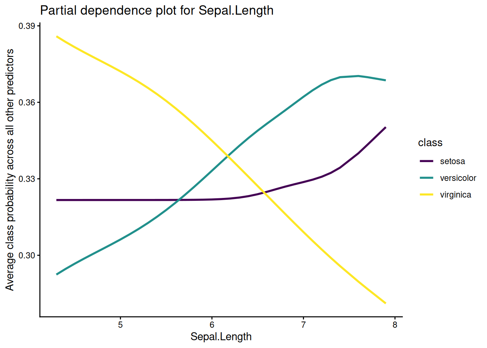
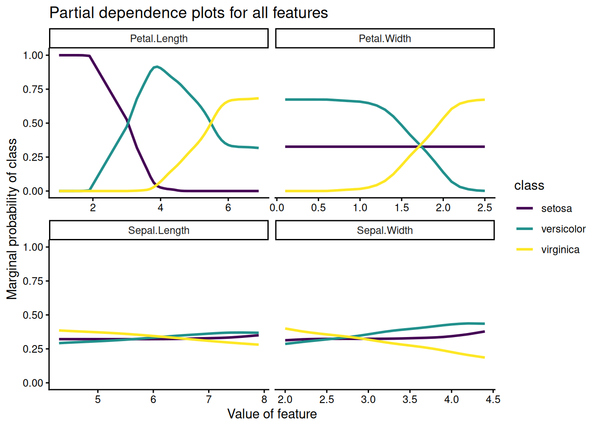

understanding multinomial regression with partial dependence plots
some intuition for multinomial regression’s initially intimidating functional form
2018-10-23
Motivation
This post assumes you are familiar with logistic regression and that you just fit your first or second multinomial logistic regression model. While there is an interpretation for the coefficients in a multinomial regression, that interpretation is relative to a base class, which may not be the most useful. Partial dependence plots are an alternative way to understand multinomial regression, and in fact can be used to understand any predictive model. This post explains what partial dependence plots are and how to create them using R.
Data
I’ll use the built in iris dataset for this post. If you’ve already seen the iris dataset a hundred times, I apologize. Our goal will be to predict the Species of an iris flower based on four numerical measures of the flower: Sepal.Length, Speal.Width, Petal.Length and Petal.Width. There are 150 measurements and three species of iris: setosa, versicolor and virginica.
Recall that the probability of an event y = 1 given data x ∈ ℝp in a logistic regression model is:
$$
P(y = 1|x) = {1 \over 1 + \exp(-\beta^T x)}
$$ where β ∈ ℝp is a coefficient vector. Multinomial logistic regression generalizes this relation by assuming that we have y ∈ {1, 2, ..., K}. Then we have coefficient vectors β1, ..., βk − 1 such that
There are only K − 1 coefficient vectors in order to prevent overparameterization1. The purpose here isn’t to describe the model in any meaningful detail, but rather to remind you of what it looks like. I strongly encourage you to read this fantastic derivation of multinomial logistic regression, which follows the work that lead to McFadden’s Noble prize in economics in 2000.
If you’d like to interpret the coefficients, I recommend reading the Stata page, but I won’t rehash that here. Instead we’ll explore partial dependence plots as a way of understanding the fit model.
Partial dependence plots
Partial dependence plots are a way to understand the marginal effect of a variable xs on the response. The gist goes like this:
Pick some interesting grid of points in the xs dimension
Typically the observed values of xs in the training set
For each point x in the grid:
Replace the xs with a bunch of repeated xs in the training set
Calculate the average response (class probabilities in our case)
More formally, suppose that we have a data set X = [xsxc] ∈ ℝn × p where xs is a matrix of variables we want to know the partial dependencies for and xc is a matrix of the remaining predictors. Suppose we estimate some fit f̂.
Then f̂s(x), the partial dependence of f̂atx (here x lives in the same space as xs), is defined as:
This says: hold x constant for the variables of interest and take the average prediction over all other combinations of other variables in the training set. So we need to pick variables of interest, and also to pick a region of the space that xs lives in that we are interested in. Be careful extrapolating the marginal mean of f(x) outside of this region!
Here’s an example implementation in R. We start by fitting a multinomial regression to the iris dataset.
pd %>%ggplot(aes(!!var, marginal_prob, color = class)) +geom_line(size =1) +scale_color_viridis_d() +labs(title =paste("Partial dependence plot for", quo_name(var)),y ="Average class probability across all other predictors",x =quo_name(var)) +theme_classic()

I won’t show it here, but these values agree exactly with the implementation in the pdp package, which is a good sanity check on our code.
Partial dependence plots for all the predictors at once
In practice it’s useful to look at partial dependence plots for all of the predictors at once. We can do this by wrapping the code we’ve written so far into a helper function and then mapping over all the predictors.
all_dependencies %>%ggplot(aes(feature_value, marginal_prob, color = class)) +geom_line(size =1) +facet_wrap(vars(feature), scales ="free_x") +scale_color_viridis_d() +labs(title ="Partial dependence plots for all features",y ="Marginal probability of class",x ="Value of feature") +theme_classic()

Here we see that Sepal.Length and Sepal.Width don’t influence class probabilites that much on average, but that Petal.Length and Petal.Width do.
Takeaways
Partial dependence plots are useful tool to understand the marginal behavior of models. The plots are especially helpful when telling a story about what your model means. In this post, I’ve only worked with continuous predictors, but you can calculate partial dependencies for categorical predictors as well, although you’ll probably want to plot them slightly differently. Additionally, it’s natural to consider the partial dependencies of a model when xs is multidimensional, in which case you can visualize marginal response surfaces.
I recommend using the pdp package to calculate partial dependencies in practice, and refer you to Christoph Molnar’s excellent book on interpretable machine learning for additional reading.
Some machine learning courses present multinomial regression using a K × p coefficient matrix, but then estimate the coefficients with some sort of penalty. The penalty is necessary to prevent the likelihood from becoming infinite (in the k × p parameterization, multiplying β by any constant c retains the same class probabilities while inflating the likelihood). Statisticians are typically more interested in unbiased estimators and present the (K − 1) × p parameterization.↩︎
At one point I began wondering how to get a small but representative subset of xc, which lead me down the rabbit hole of sampling from convex sets (for this problem I was imagining using the convex hulls of xc). There’s an interesting observation that you can use the Dirichlet distribution for this in an old R-help thread. Then I stumbled across hit and run samplers, which are intuitively satisfying, and finally the walkr package and the more sophisticated methods it implements. I imagine sampling this is just a hard problem in high dimensions, but if anybody can show me how to convert the convex hull of a dataset calculated using chull() into a format suitable for walkr, please email me!↩︎